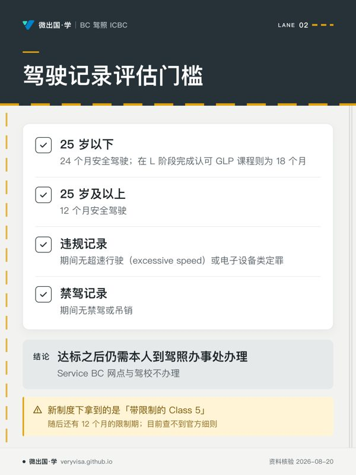
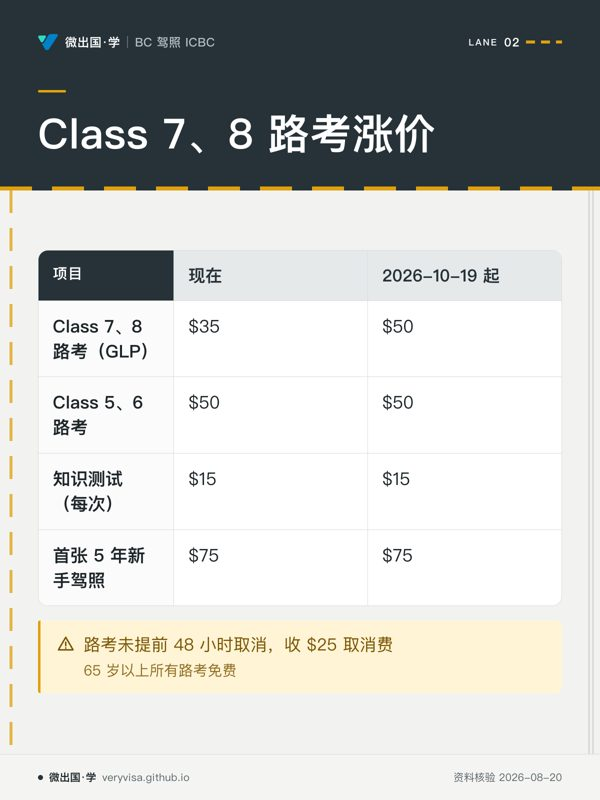
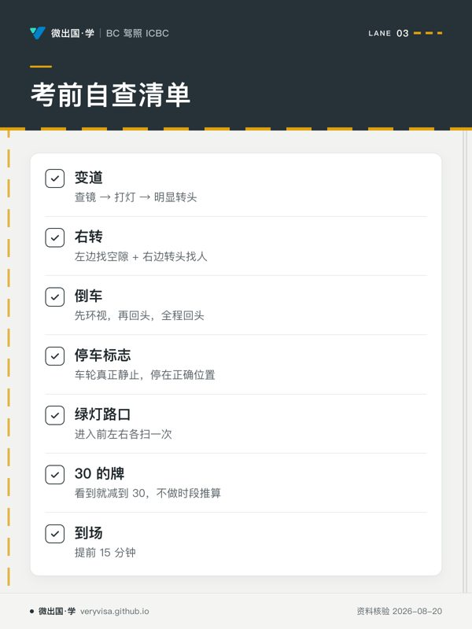
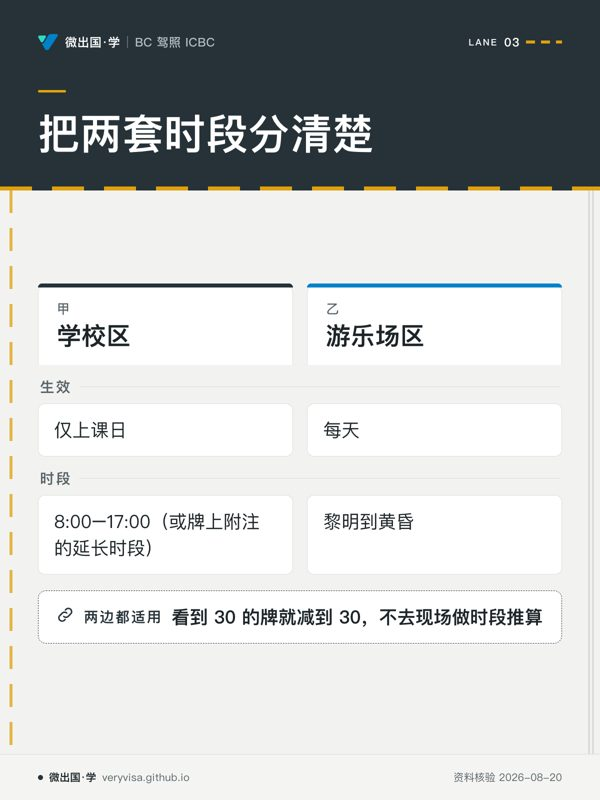
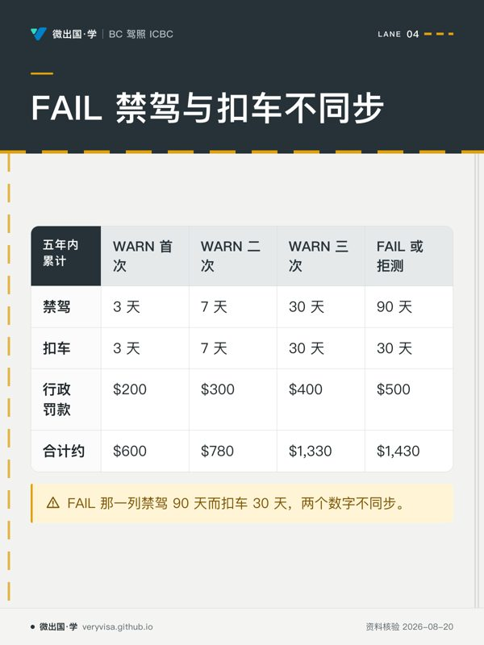
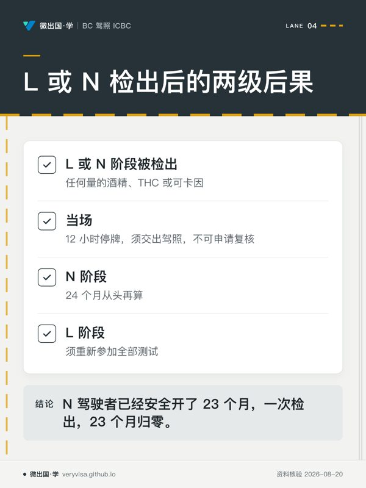
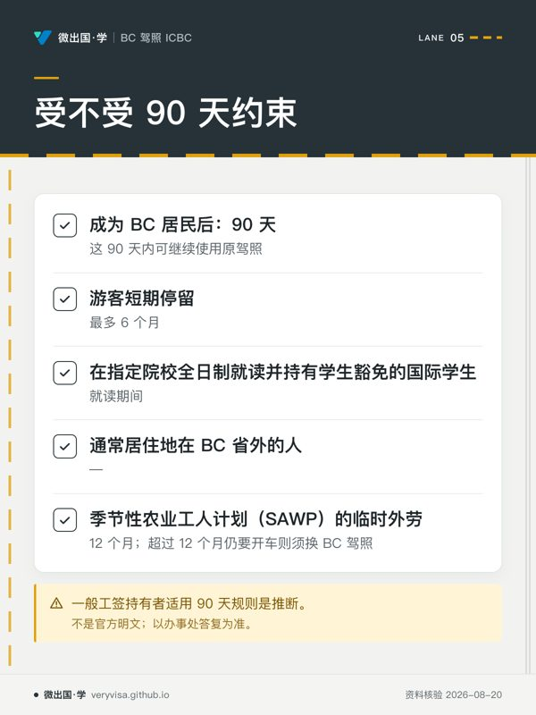
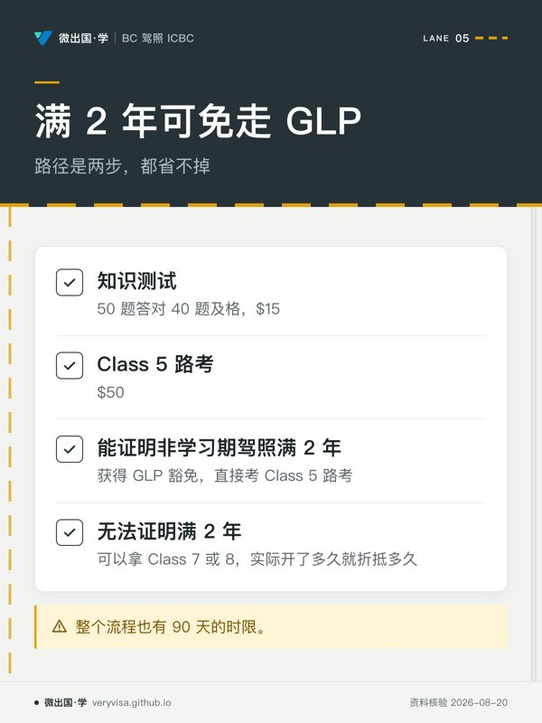

微出国 · 学
路线 › 知识卡
知识卡：不看正文也能拿到核心内容
全站 10 张知识卡，按页面分组。一张卡只画正文里的一段——一个判断、一条算法、一份清单；卡上每个字都能在对应页面的正文里找到（资料核验 2026-08-20）。
路线（首页）

分级驾照 GLP：L → N → Full

- 先看先看年龄两项，再核对记录条件是否同时满足。
- 易漏课程只改变年轻一组的安全驾驶月数；办理地点另有限制。
- 下一步去练习，按年龄与记录逐项判断是否达标。

- 先看先扫四个项目两列，只有一行金额发生变化。
- 易漏取消费还受取消时间影响；另有年龄相关的免费规则。
- 下一步去练习，区分路考费、知识测试费和取消费。
路考常见挂点：为什么一半人第一次没过

- 先看先盯每项的可见动作，避免只在脑中完成判断。
- 易漏这张卡只挑七项；空隙和出发前也在正文自查表里。
- 下一步去练习，让同伴只看动作是否做得清楚。

- 先看先看两栏的日历范围，再看各自每天的时间边界。
- 易漏最易混淆的是把学校区的规则套到游乐场区。
- 下一步去模考，见到限速牌时练习立即作出判断。
酒驾与罚则：一次违规要付多少

- 先看先把四列当作累计次数读，再看每一行的差异。
- 易漏合计里已含拖车与保管费；不含税、上涨的保费和可能的矫正课程费用。
- 下一步去练习做罚则配对，检查自己是否会混淆两组天数。

- 先看先按「当场」和「进度」分两层看，别把处理结果混在一起。
- 易漏酒精之外，THC 和可卡因也在这条零容忍规则里。
- 下一步去练习分别判断 L 与 N 被检出后的后果。
新移民换 BC 驾照：90 天与驾龄豁免

- 先看先判断时钟会不会启动，再按身份找可用期限。
- 易漏访客在 BC 开车是否需要国际驾驶许可（IDP），查不到官方说法。
- 下一步去讲义核对自己的情形；拿不准时直接问驾照办事处。

- 先看先看能否提供足够证明，这一步决定走哪条考试路径。
- 易漏无法证明满 2 年也不是回到原点，实际驾驶时间仍可折抵。
- 下一步去练习做知识测试，再到讲义核对需要准备的证明。